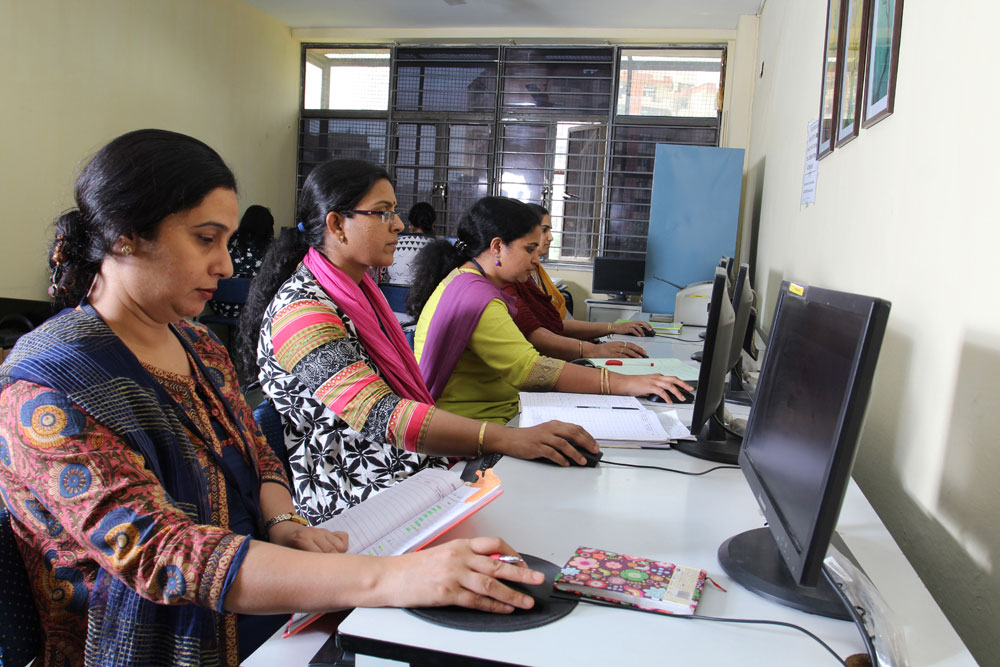
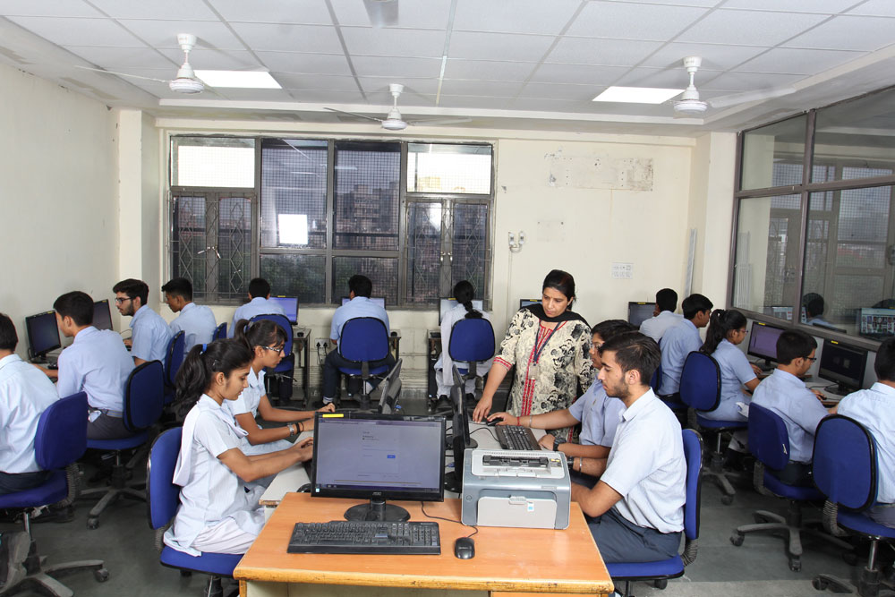

TECHNOLOGY INTEGRATION
The school integrates information and communication technology into the curriculum, and thus provides the latest resources in this field.
The school's computer and communication network provides state-of-the-art computing facilities and broadband Internet connectivity. Apart from full-
fledged Computer Labs, the Learning Centre also has computing facility to assist students in projects and research assignments.
The entire campus is connected through a network and computers, printers, scanners with high speed internet connectivity.


HOME<<